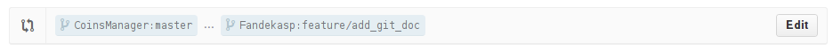

Guidance about Git¶
Below are described the steps to get started with Git & Github.
Fork¶
First, go to the CoinsManager Github and click on the Fork button:

This will create a clone of the main repository in your Github account.
Clone¶
In a shell, run:
$ git clone git@github.com:YourUsername/CoinsManager.git
$ cd CoinsManager && git flow init
See also
Feature¶
So you cloned your repository and would like to work on some feature. Because we are using the Git Flow, you can create a new branch as follow:
$ git flow feature start my_new_feature
$ git commit # as many times as needed
$ git flow feature publish my_new_feature
Tip
That git flow command is equivalent to git checkout -b feature/my_new_feature develop
Important
If you’re going to work on a specific branch (for example alpha), and wish to use git flow for it, you’ll need to change your .git/config to match your new main development branch:

Pull Request¶
Great, you create your new code and it’s available in your github repository. But you would like to see it integrated in the main repository. How can you do that ?
Go to your github repository, and you should see something like this:

Click on Compare & pull request, this will bring you to the pull request interface.
Note that your branch will try to merge against the default one automatically.
Click on the Edit button and change it to the appropriate branch (most often develop)

Add a useful message to describe the feature you want to merge, and press Send pull request. Congratulations, you sent your first contribution!
Note
You can always add more commits after sending a pull request. Just push them to your feature branch, and the pull request will automatically be updated with it.
Remotes¶
You already did a contribution before, but want to do more, and your repository became quite outdated compared to the upstream repository.
That’s no problem! Just add a remote for the upstream repository and rebase from it:
$ git remote add upstream https://github.com/CoinsManager/CoinsManager.git
$ git fetch upstream
$ git checkout develop && git rebase upstream/develop
Then, if you’ve been working on a feature and also want to update that branch with the latest:
$ git checkout feature/my_new_feature
$ git rebase develop
It’s a good idea to rebase often, to make the pull request as easy to merge as possible for the core developers (you’ll probably be asked to rebase your branch and fix conflicts otherwise).
If your code doesn’t break anything, you should see a successful Travis build appear:

Tip
We just added upstream as remote, but you can add as many remotes as you want. If you want to participate in a feature that is awaiting merging in a pull request, add that user repo as a new remote, and pull request directly to that user branch for the upstream pull request to be auto-updated!
Merge¶
If you are a power user, then you’ll be able to accept pull requests from other users. Go to the Pull request page, select the pull request that you want to merge, and click on Merge pull request.

Merge conflict¶
You tried to merge a pull request from Github, but it failed due to some conflict. Two options are available:
Merge is too difficult to resolve, or you lack time to resolve it: Ask the author of the pull request to rebase his feature from upstream (therefore he’ll need to deal with the conflict, then push --force to update his github pull request)
The Author would need to proceed as follow:
$ git checkout feature/<NAME> $ git fetch upstream $ git rebase upstream/develop $ # RESOLVE CONFLICT $ git rebase --continue $ git push origin --force
Then you can merge the pull request from Github without conflict.
Do a merge a-la git flow:
$ git remote add <CONTRIBUTOR> https://github.com/<CONTRIBUTOR>/CoinsManager.git $ git checkout -b feature/<NAME> <CONTRIBUTOR>/feature/<NAME> $ git checkout develop $ git fetch upstream $ git rebase upstream/origin $ git flow feature finish <NAME> $ # RESOLVE CONFLICT $ git commit $ git push upstream develop